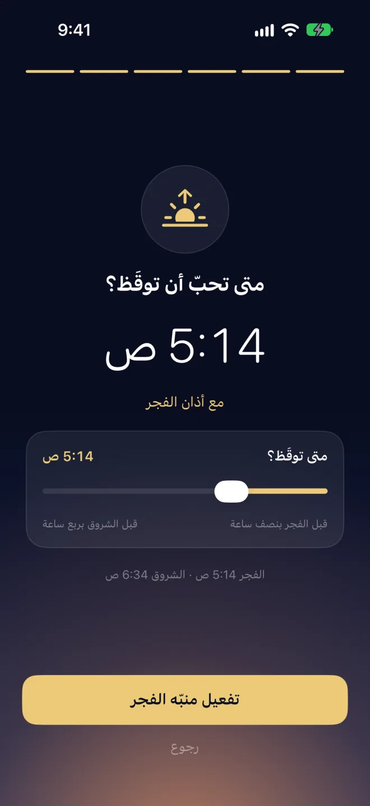
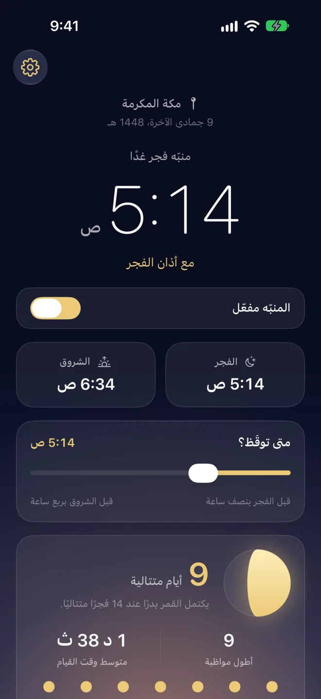
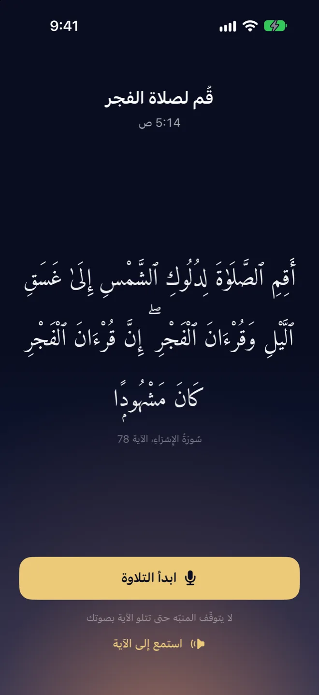
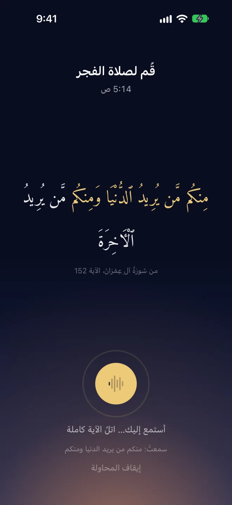
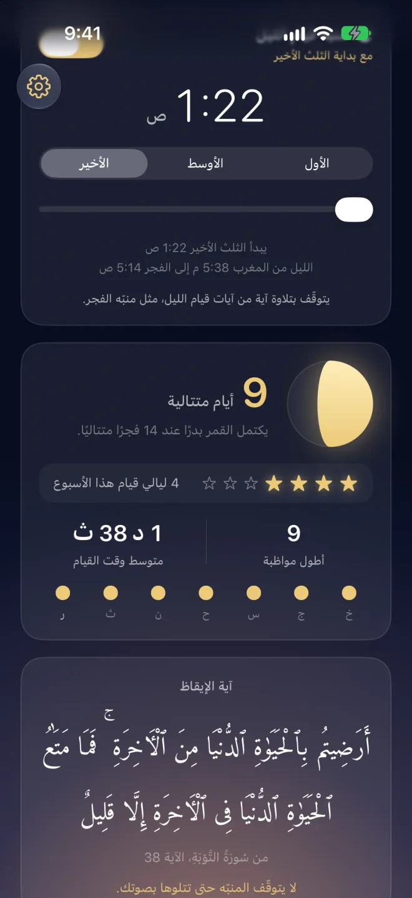

١
يعرف وقت فجرك
يحسب الفجر والشروق لمدينتك كل يوم بطريقة الحساب المتّبعة في بلدك، وتختار أنت متى توقَظ.

منبّه الفجر على iPhone
منبّه لا يتوقّف حتى تتلو آية الصباح بصوتك.
يعرف «قُم» وقت الفجر في مدينتك، ويوقظك في الوقت الذي تختاره. وحين تتلو الآية بصوت مسموع تكون قد استيقظت حقًّا، ويصبح القيام أقرب.

أصعب ما في الفجر هو اللحظة الأولى. «قُم» صُمّم لتلك اللحظة وحدها.
يحسب الفجر والشروق لمدينتك كل يوم بطريقة الحساب المتّبعة في بلدك، وتختار أنت متى توقَظ.

منبّه من منبّهات النظام، يُسمع حتى لو كان الهاتف صامتًا أو في وضع التركيز، ومعه آية تحثّك على القيام.

تضيء الكلمات واحدة بعد أخرى كلما سمعها الهاتف، ويتوقّف المنبّه حين تكتمل الآية.

٢٦ آية ومقطعًا مختارًا، كلّها تحثّ على القيام. جرّب هنا كيف يبدو ذلك؛ في التطبيق يضيئها صوتك أنت.
أَقِمِ ٱلصَّلَوٰةَ لِدُلُوكِ ٱلشَّمْسِ إِلَىٰ غَسَقِ ٱلَّيْلِ وَقُرْءَانَ ٱلْفَجْرِ ۖ إِنَّ قُرْءَانَ ٱلْفَجْرِ كَانَ مَشْهُودًۭا
سُورَةُ الإِسۡرَاءِ · ٧٨
من نصف ساعة قبل الفجر إلى ربع ساعة قبل الشروق. حرّك المؤشّر.
مثال توضيحي: الفجر ٤:٥٨ والشروق ٦:١٧. في التطبيق تُحسب الأوقات لمدينتك كل يوم.
كل صباح تقوم فيه يزيد قمرك نورًا: هلال رقيق بعد اليوم الأول، وبدر كامل بعد أربعة عشر يومًا متتاليًا. ويعرض «قُم» عدد أيامك المتتالية، وكم تستغرق من الرنين إلى إتمام التلاوة.

يحدّد مدينتك من موقعك، أو تختارها من القائمة. ويمكنك تغيير طريقة الحساب أو تعديل الفجر بالدقائق ليوافق تقويم مسجدك.
يجدول منبّهات الأيام القادمة مسبقًا، ويعدّلها مع تغيّر وقت الفجر يومًا بعد يوم.
نموذج مخصّص لتلاوة القرآن الكريم يعمل على هاتفك. يكفي أن تقرأ الآية كاملة بصوت واضح، ولو على مهل.
إن تعذّرت التلاوة بعد ثلاث محاولات، لبحّة في الصوت مثلًا، يتوقّف المنبّه بتصوير سجّادة صلاتك.
تتبدّل الآية كل صباح، ويمكنك تثبيت آية واحدة إن أحببت أن تبدأ بها كل يوم.
لا اشتراكات ولا مشتريات ولا إعلانات. تطبيق غير ربحي يطوّره مطوّر واحد.
يسمح iOS لأي أحد بإسكات رنّة واحدة من شاشة القفل، ولا يستطيع أي تطبيق منع ذلك. لذلك يعيد «قُم» الرنين كل ثلاث دقائق، حتى ثماني مرات، إلى أن تتلو الآية.
«قُم» ليس له خادم، ولا يجمع أي بيانات عنك.
يجري التعرّف على التلاوة على الهاتف نفسه، ولا يُحفظ أي تسجيل. وإن تعذّر تشغيل النموذج، يستأذنك التطبيق قبل استخدام التعرّف على الكلام من Apple.
يُحفظ موقعك وصورة سجّادتك على هاتفك فقط. لمعرفة اسم المدينة تُرسَل الإحداثيات إلى خرائط Apple، ويمكنك اختيار المدينة يدويًّا بدلًا من ذلك.
بلا حسابات، ولا إعلانات، ولا أدوات تحليل. وهذه الصفحة كذلك لا تحمّل أي شيء من طرف ثالث.
لا. الآية مكتوبة أمامك على الشاشة، ويكفي أن تقرأها كاملة بصوت واضح. يتسامح «قُم» مع الأخطاء اليسيرة ومع القراءة المتمهّلة.
بعد ثلاث محاولات يمكنك إيقاف المنبّه بتصوير سجّادة صلاتك التي حفظت صورتها في التطبيق. وإن لم تحفظ صورة، يظهر بعد محاولات أكثر زرّ يتوقّف به المنبّه بالضغط المطوّل نصف دقيقة.
نعم. يرنّ «قُم» منبّهًا من منبّهات النظام، فيُسمع في الوضع الصامت وفي وضع التركيز.
من الإعدادات اختر طريقة الحساب المتّبعة في بلدك، أو عدّل وقت الفجر بالدقائق حتى يطابق تقويم مسجدك.
iPhone بنظام iOS 26.1 أو أحدث. الواجهة بالعربية فقط حاليًّا.
لأنه مشروع غير ربحي. لا إعلانات فيه ولا اشتراكات ولا مشتريات.
Qum («قُم», “Arise”) is a free, not-for-profit iPhone alarm for Fajr, the dawn prayer. It works out Fajr for your city, rings at the time you choose between 30 minutes before Fajr and 15 minutes before sunrise, and stops when you recite the morning’s Quran verse aloud. Recitation is recognised on the phone; nothing is recorded.
No accounts, no ads, no analytics. The interface is Arabic only for now. Requires iOS 26.1 or later. Privacy policy · Support